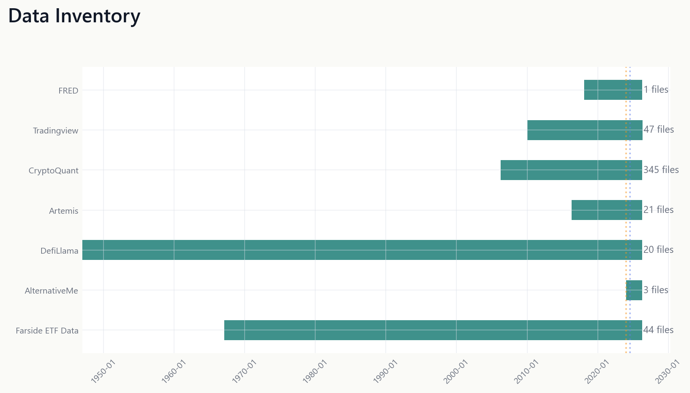
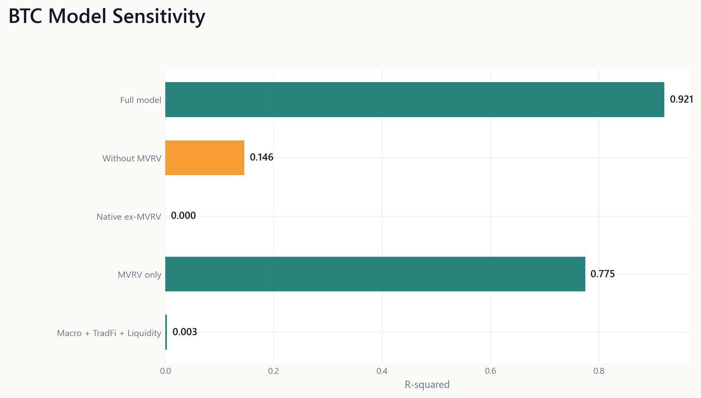
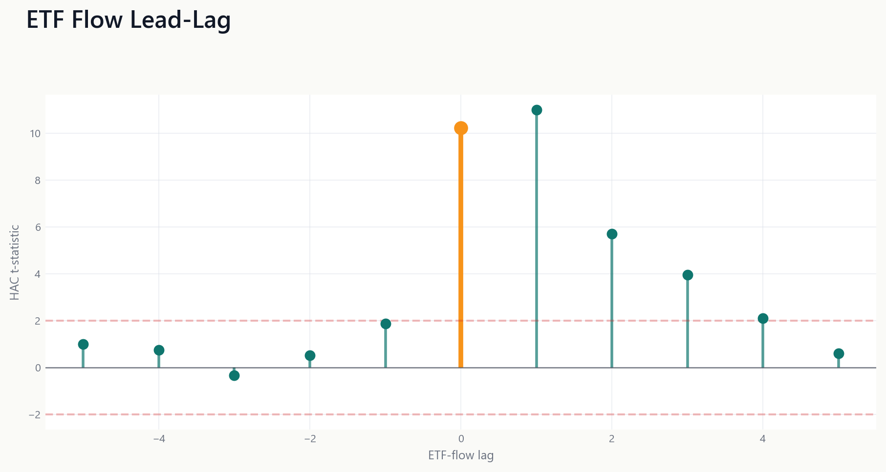
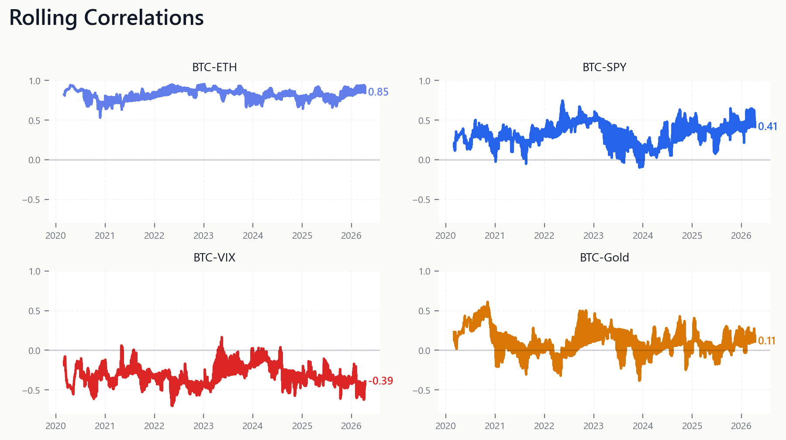
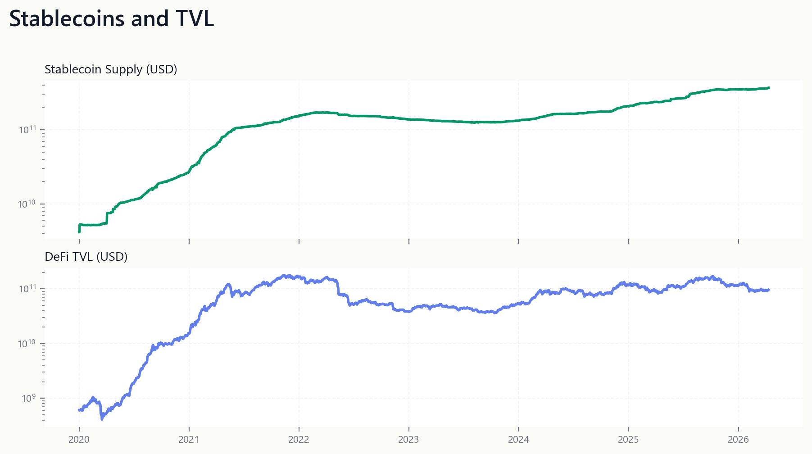
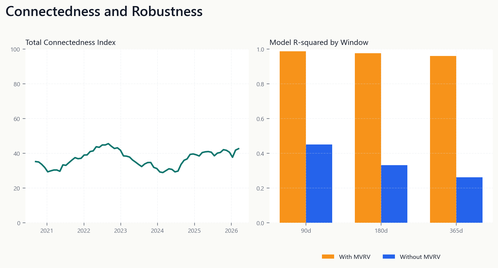

F01 data inventory

F02 btc model sensitivity

F03 etf flow lead lag

F04 rolling correlations

F05 liquidity context

F06 connectedness and robustness

Static, minimal dashboard of public canonical figures.
\n




